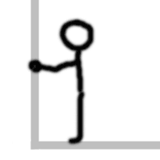

Using LLMs to lower barriers to write apps
Sriram Ramkrishna
Quick Introduction
$ whoami
GNOME contributor since 1997,
Work for Intel Corporation,
Focused on Developer Relations and
Ecosystem Building
The premise of this talk
I wanted to:- Explore how LLMs could be used to generate code
- What are the limitations
- How to leverage LLMs today
Some level setting on AI/ML

LLM - Large Language Model :: AI models that can interpret human requests and generate responses in human terms.
SLM - Small Language Model :: Same thing as above but deisgned to work at a smaller scale eg laptops, phones, etc.
The real power is transformers..
Transformers is a deep learning architecture drives the ability to learn context in human language.
It is tranformers that converts text into a numerical representation and then figures out the associations between the words.
Consider this quick example
What is the color of a bark of a tree?
Transformers convert this into a numerical representations called 'tokens'
Through the magic of neural networks, the transformers figures out which are the important words and then figures out how to respond.
Transformers contd
Transformers are now the primary means of training LLM and SLMs. It's essentially what's driving the AI boom.Using an LLM to generate code
There are a lot of LLMs to pick from when trying to figure out how to use.

Coder LLMS

Coder LLMs are LLMs that are specifically trained on code on github, gitlab, stack overflow etc. They primarly are focused on understanding programming.

I used ChatGPT for this and not one of the coder LLMs

I started with an idea - I wanted to write an app to help with events.
Create an app that would allow me to create a conference agenda:
- show the data in a row/column
- Let me move rows up and down
- move columns across the area
Step 1: Creating the python3 app for GTK4
The first step is to create a very simple app that uses a window widget and a gtkcolumnview. To do this, I used the prompt:
Create a sample gtk4 python app using GtkColumnView
Step 2: Iteratively fix the app
This lead to over 2 hours of trying to get ChatGPT to do what you want. Some issues:
-
Frequent hallucinations between different versions of GTK
-
Frequent hallucinations of API that doesn't exist.
-
When it doesn't know the answer it adds garbage.
-
You could end up back at the beginning
Step 3: I got somewhere but ran into an issue...
After about two days I had something that kind of worked. Some observations:- It has a specific kind of mindset when generating. You have to figure out better ways to do prompting to coax the right answer.
- You can run into hallucinations if you are asking for implementations that there is no training sample for

- GenAI doesn't teach you how to approach writing an app.
- You can spend a lot of time "vibing"
- You stop thinking when you're using AI


- • You do get an idea of how to figure out your data models. (mostly because you're frustrated)
- • ChatGPT can be a great learning tool. Upload sample code and ask them to explain what it does. It usually gets that right.
- • ChatGPT and other LLMs continue to improve over time. With more training comes more accuracy.
Some ideas in incorporating LLMs
- 💡 Create a lot of sample code for folks to upload and ask the LLM how and why it works
- 💡 Creating training material - write docs geared towards users on how to approach writing a GNOME or KDE app
- 💡 Create training material Engage more in discussions where you post code.
- LLMs are a great learning tool but not necessarily an accurate tool for coding. The expectations do not meet the hype.
- We should as an ecosystem embrace LLMs where it makes sense.
- AI is out there, and it won't be going away any time soon - we need to figure out how to adjust to this new world that matches our values.
- LLMs can be a good tool to deal with rote tasks.
Thanks for listening - I hope the talk was interesting to you.
Question?
I'm available at:
Mastodon: sri@mastodon.social, sri@floss.social
LinkedIn: https://linkedin.com/in/sriran-ramkrishna
Matrix: @sri:gnome.org
Email: sri@ramkrishna.me